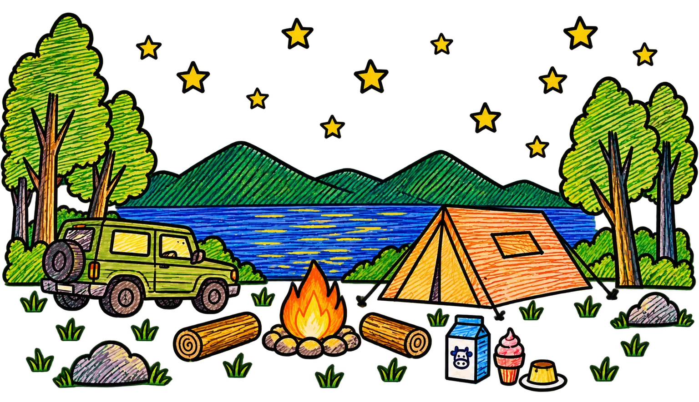
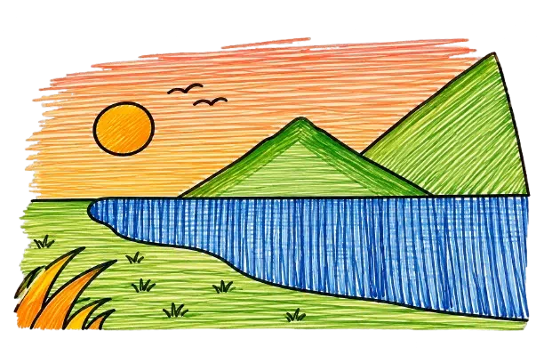
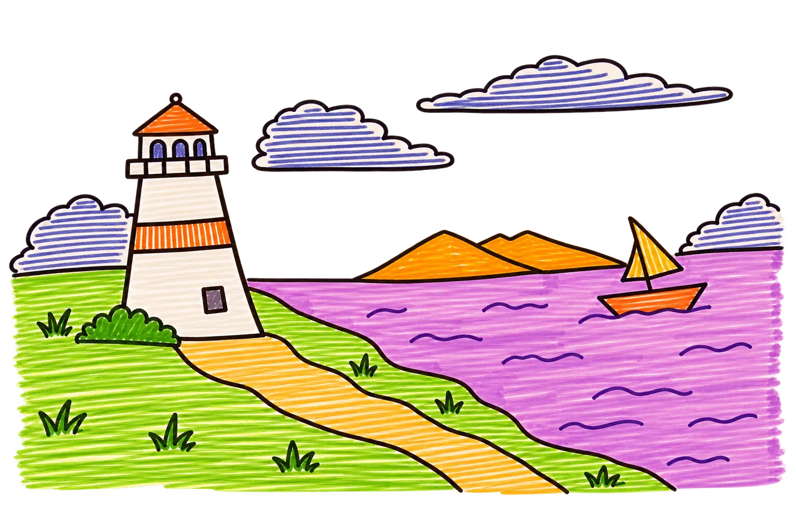
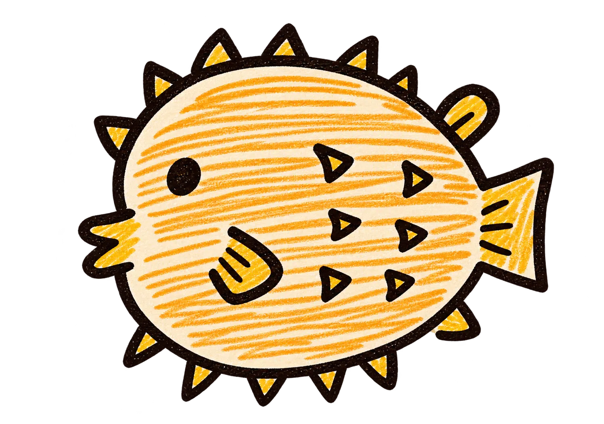
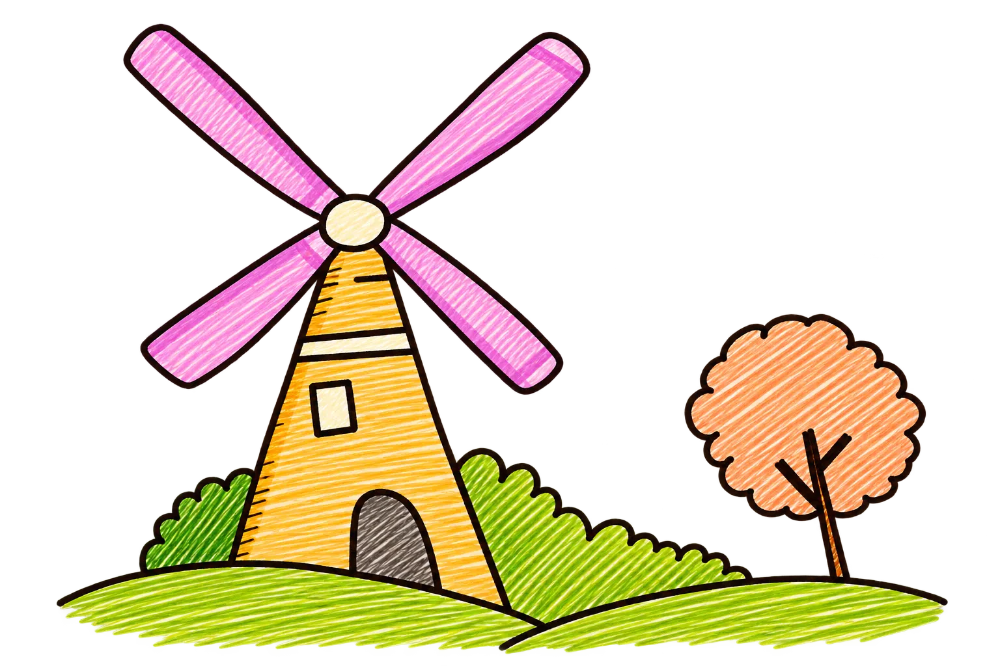
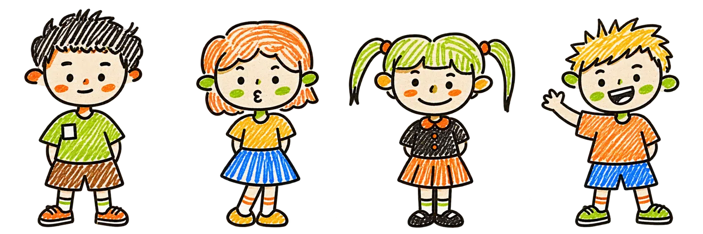
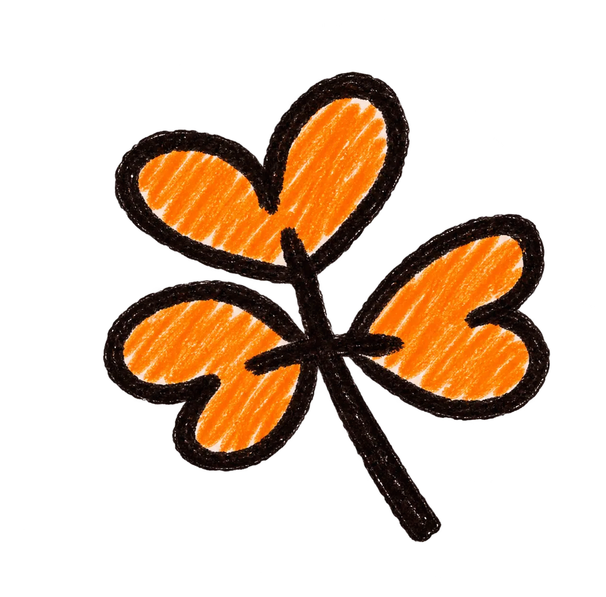
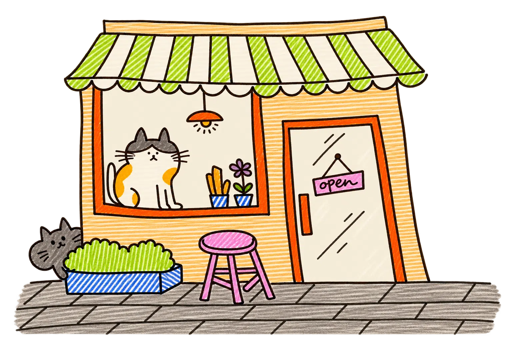
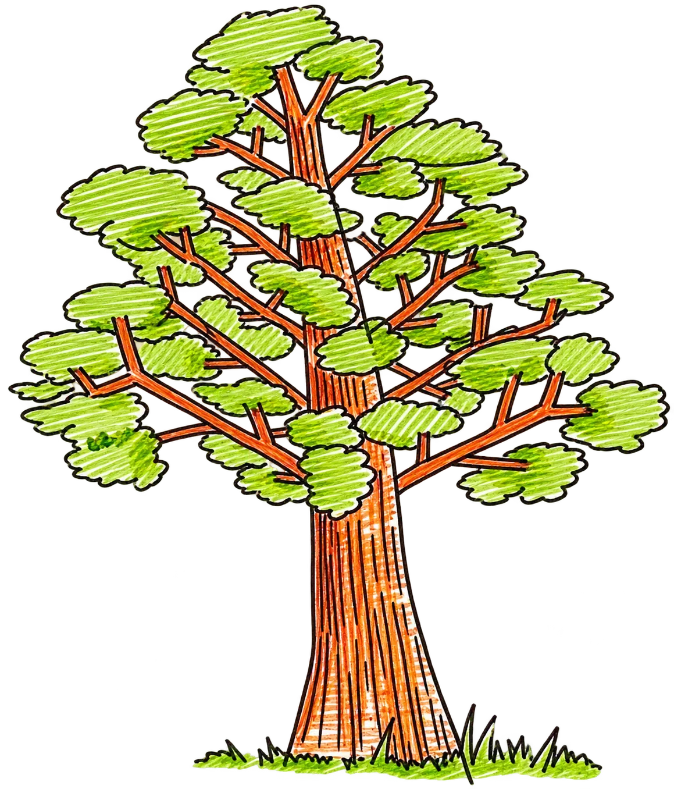
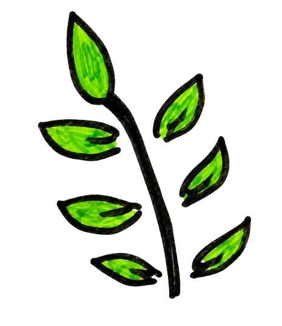

UNDER THE STARS
The art that makes
others' lives colorful.
A little art
Under a sky full of stars,
maybe the night was made
for little stories with random things ..

A LITTLE MORNING
Dawn begins to break
over the mountains.
The mist is still hanging around,
but the world is waking up.

cittcitt~
BY THE SEA
The breeze carries
a little story to the shore.
Clouds drift slowly,
while the lighthouse keeps watch.


A SUNNY AFTERNOON
In the afternoon, children gather
around the windmill, enjoying the view.
In the afternoon, the children gather
in the green fields and enjoy the view.



GOLDEN HOUR
Late afternoon is the perfect time
to visit a café with a few friends.
The light turns warm,
saving one last color for the sky.

SOMETHING THAT GROWS
Like a tree, life grows
through every season.


When we plant trees, we plant the
seeds of peace and seeds of hope